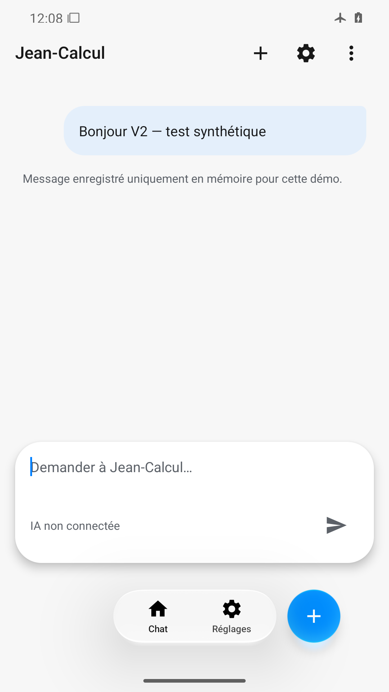
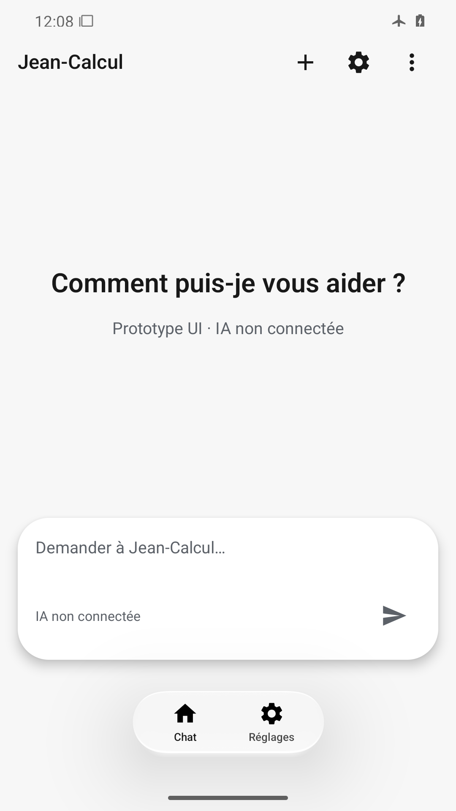
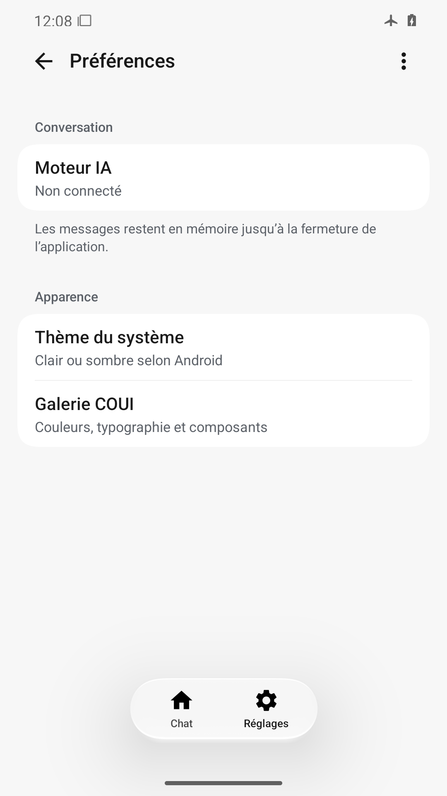
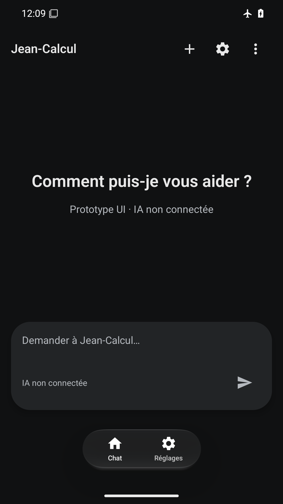
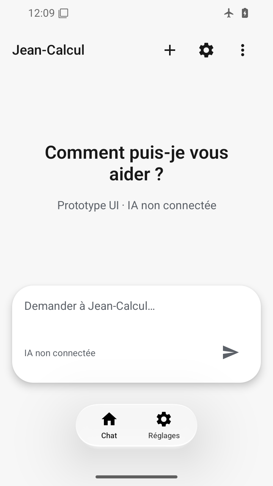
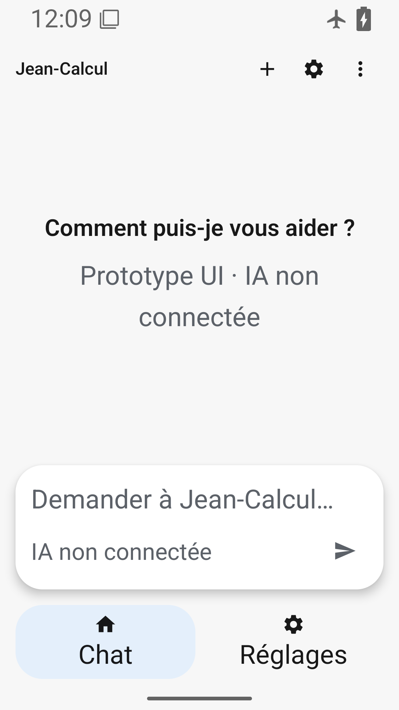
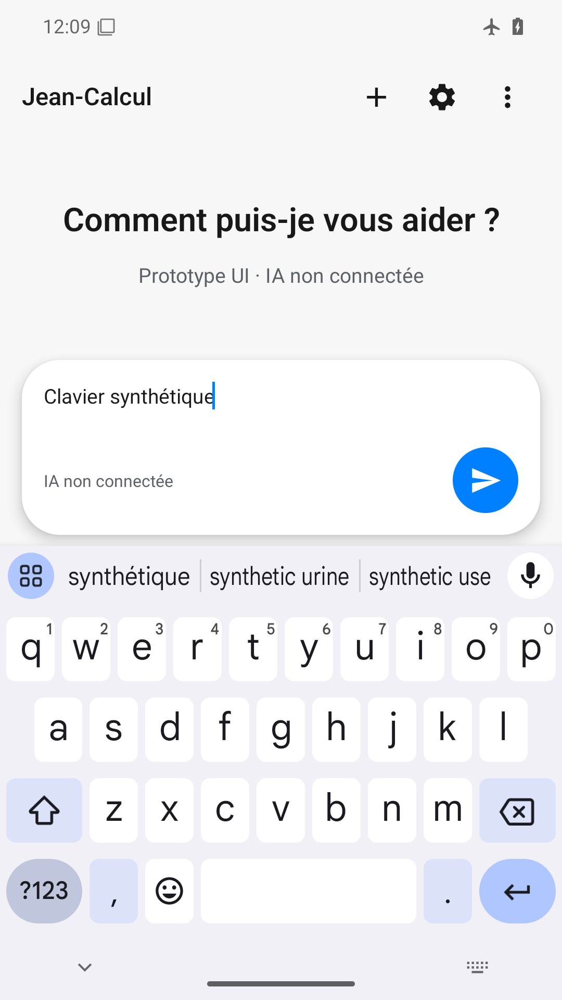

Accueil, saisie et navigation complets, barres système contrastées.

Bulle lisible, navigation et nouveau bouton bleu visibles après fermeture IME.

Accueil restauré ; capsule de navigation et icônes complètes après reset.

Groupes lisibles mais la navigation basse ne montre que ses libellés, sans icônes ni surface.

Texte clair lisible, surfaces sombres distinctes et navigation complète.

360×640 dp, titre replié sans coupure, saisie et navigation accessibles.

Corps agrandi et navigation à hauteur libre sans coupure ; titres COUI fixes documentés.

En-tête et ses actions désormais visibles ; saisie et Envoyer au-dessus du clavier, aucun recouvrement.